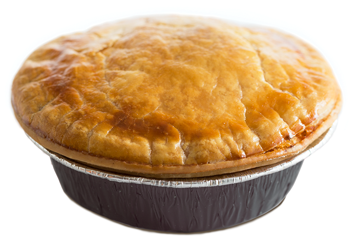

Beef Stew Pot Pie

Description:
Cacio e Pepe literally translates to "cheese and pepper". It is of italian in origin and while it is super simple, it is extremely delicious!
Ingredients:
- Beef Chuck Roast
- Olive Oil
- Mushrooms
- onion
- carrots
- tomato paste
- garlic
- red wine
- beef broth
- soy sauce
- worcestershire
- frozen peas
- egg
- pie dough
- Salt
- Pepper
Steps:
- Adjust oven rack to lower-middle position and heat oven to 350F degrees. Pat beef cubes dry with a paper towel and season with salt and pepper. Heat 1 1/2 tablespoons of the oil in a Dutch oven over medium-high heat. Add half the beef and cook until well browned all over, about 7 minutes. Using slotted spoon, transfer the beef to bowl or plate with the remaining uncooked beef. Note: you will not cook the remaining beef before placing in the pot pie. Cooking half the beef imparts some good flavor from braising but saves time not requiring all the beef to be browned before placing in the pie. It works, I promise.
- Reduce heat to medium and add remaining 1 1/2 tablespoons oil to now-empty pot. Add mushrooms, onion, and carrots and cook until vegetables are lightly browned, about 5 minutes, scraping up any browned bits. Stir in tomato paste and garlic and cook until fragrant, about 30 seconds.r
- Stir in wine (or water) and cook until evaporated, about 2 minutes. Stir in flour until the vegetables are well coated and cook for 1 minute. Add broth, soy sauce, Worcestershire, and bay leaf, stirring until combined. Scrape any bits that have stuck to bottom of pan to incorporate into liquids. Add all of the beef and bring to a simmer. Cover and transfer to oven. Cook until beef is tender, about 1 1/4 hours.
- Remove filling from oven and taste the beef to make sure it's tender to your liking. If it tastes chewy, add 1/4 cup water, stir and return to oven for another 20-30 minutes. Once meat is tender, remove and then increase oven temperature to 400F degrees. If the meat mixture looks to need more "juice", then remove mixture from pot to a plate and add 1/4 to 1/2 cup water back to the Dutch oven and kind of tilt the pan to scrape off some of the crusty fond that's accumulated in the pot. This should create a thick meaty sauce to add into the meat mixture and thin it out a bit, plus it only adds to the flavor of the beef.
- Discard the bay leaf and stir in the fresh thyme and add the peas. Taste the filling and add salt and pepper to taste at this time (up to 1 teaspoon salt and 1/2 teaspoon pepper).
- Spray the bottom of a 9-inch deep-dish pie plate and add meat mixture to the dish..
- Brush the rim and interior lip of the pie plate with egg (this will prevent the shell from sticking to the dish and cracking or breaking). Top the filling with pie dough so dough overhangs edges of pie plate only slightly. Fold overhanging pie down inward so folded edge is flush with inner edge of pie plate. Crimp dough evenly around edge of pie using your fingers.
- Using a paring knife, cut a 1/2-inch hole in center of pie. Cut six 1/2-inch slits around the hole, halfway between center and edge of pie. Brush dough with remaining egg. Season the top of the dough with salt, pepper and remaining 1/2 teaspoon chopped thyme. Transfer pie to rimmed baking sheet and bake until crust is golden brown, 20-30 minutes.
- Transfer pie to cooling rack and let cool for 15 minutes. Serve.
All credit for recipe goes here
Home